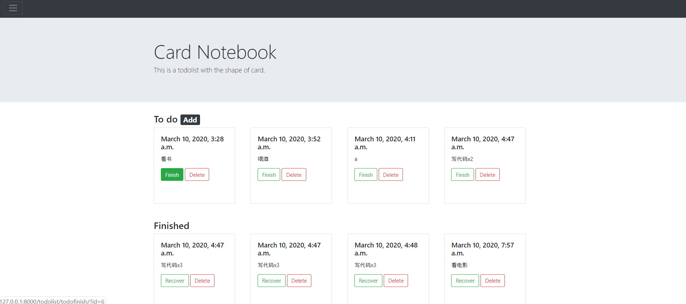
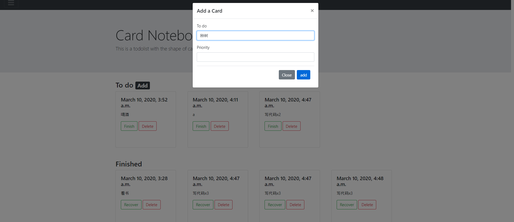

本案例使用Django框架创建了一个todolist应用。


[TOC]
虚拟环境使用
使用virtualenv
1
2
3
4
5
6
7
8
9
10
11
12#创建虚拟环境
virtualenv venv
#cd到虚拟环境目录
#激活虚拟环境
source ./bin/activate
#退出虚拟环境
deactivate
#删除虚拟环境
rmvirtualenv venv使用virtualenvwrapper
1
2
3
4
5
6
7
8
9
10
11
12
13
14
15
16
17
18
19
20
21
22
23
24
25#创建虚拟环境
mkvirtualenv venv
#列出所有虚拟环境
lsvirtualenv
#激活虚拟环境
workon venv
#退出虚拟环境
deactivate
#停止虚拟环境所有软件包
rmvirtualenv venv
#可以使用pip list 查看已安装的包
#进入虚拟环境目录
cdvirtualenv
#进入虚拟环境site-packages
cdsitepackages
#列出目录下所有软件包
lssitepackages
创建project和app的相关步骤
1 | #创建project |
修改HelloWorld/settings.py
1 | # Application definition |
修改HelloWorld/urls.py
1 | from django.contrib import admin |
todolist搭建
Model层
修改SimpleTodo/models.py
1
2
3
4
5
6
7
8
9
10
11
12
13
14
15
16from django.db import models
from django.contrib.auth.models import User
# Create your models here.
class Todo(models.Model):
user = models.ForeignKey(User, on_delete=models.CASCADE,)
todo = models.CharField(max_length=50)
flag = models.CharField(max_length=2, default='1')
priority = models.CharField(max_length=2, default='0')
pubtime = models.DateTimeField(auto_now_add=True)
def __unicode__(self):
return u'%d %s %s'%(self.id, self.todo, self.flag)
class Meta:
ordering = ['priority', 'pubtime']数据库迁移，命令行操作
1
2
3
4
5#生成迁移文件
python manage.py makemigrations
#迁移数据库
python manage.py migrate
View层
- 修改SimpleTodo/views.py
1
2
3
4
5
6
7
8
9
10
11
12
13
14
15
16
17
18
19
20
21
22
23
24
25
26
27
28
29
30
31
32
33
34
35
36
37
38
39
40
41
42
43
44
45
46
47
48
49
50
51
52
53
54
55
56
57
58
59
60
61
62
63
64
65
66
67
68
69
70
71
72
73
74
75from django.shortcuts import render
from django.http import HttpResponseRedirect
from django.template import RequestContext
from django.contrib.auth.models import User
from django.http import Http404
from SimpleTodo.models import Todo
# Create your views here.
# 获取todo列表
def todolist(request):
todolist = Todo.objects.filter(flag=1)
finishtodos = Todo.objects.filter(flag=0)
return render(request, 'simpleTodo.html',
{'todolist': todolist, 'finishtodos': finishtodos},)
# 完成todo
def todofinish(request):
id = request.GET.get('id','')
if id == '':
return HttpResponseRedirect('/todolist')
todo = Todo.objects.get(id=id)
if todo.flag == '1':
todo.flag = '0'
todo.save()
return HttpResponseRedirect('/todolist')
# todolist = Todo.objects.filter(flag=1)
# return render(request, 'simpleTodo.html', {'todolist': todolist})
# 更改todo状态
def todoback(request):
id = request.GET.get('id','')
if id == '':
return HttpResponseRedirect('/todolist')
todo = Todo.objects.get(id=id)
if todo.flag == '0':
todo.flag = '1'
todo.save()
return HttpResponseRedirect('/todolist')
# 添加todo
def todoadd(request):
if request.method == 'POST':
todoc = request.POST['todo']
priority = request.POST['priority']
user = User.objects.get(id='1')
todo = Todo(user=user, todo=todoc, priority=priority, flag='1')
todo.save()
todolist = Todo.objects.filter(flag=1)
finishtodos = Todo.objects.filter(flag=0)
return render(request, 'simpleTodo.html',
{'todolist': todolist, 'finishtodos': finishtodos},)
else:
todolist = Todo.objects.filter(flag=1)
finishtodos = Todo.objects.filter(flag=0)
return render(request, 'simpleTodo.html',
{'todolist': todolist, 'finishtodos': finishtodos},)
# 删除todo
def tododelete(request):
id = request.GET.get('id','')
if id == '':
return HttpResponseRedirect('/todolist')
try:
todo = Todo.objects.get(id=id)
except Exception:
raise Http404
if todo:
todo.delete()
return HttpResponseRedirect('/todolist')
todolist = Todo.objects.filter(flag=1)
return render(request, 'simpleTodo.html', {'todolist': todolist})
路由设置
- 修改SimpleTodo/urls.py
1
2
3
4
5
6
7
8
9
10
11from django.urls import path, include
from . import views
from django.conf.urls import url
urlpatterns = [
path(r'', views.todolist, name='todolist'),
url(r'/add', views.todoadd, name='todoadd'),
url(r'/todofinish/', views.todofinish, name='finish'),
url(r'/tododelete/', views.tododelete, name='delete'),
url(r'/todoback/', views.todoback, name='back'),
]
前端页面
使用Bootstrap，具体参考官方文档
创建模板，设置templates/base.html
1
2
3
4
5...
{% block mainbody %}
<p>original</p>
{% endblock %}
...设置templates/simpleTodo.html
1
2
3
4
5
6
7
8
9
10
11
12
13
14
15
16
17
18
19
20
21
22
23
24
25
26
27
28
29
30
31
32
33
34
35
36
37
38
39
40
41
42
43
44
45
46
47
48
49
50
51
52
53
54
55
56
57
58
59
60
61
62
63
64
65
66
67
68
69
70
71
72
73
74
75
76
77
78
79
80
81
82
83
84
85{% extends 'base.html' %}
{% block mainbody %}
<div class='container'>
<h3>To do <span class="badge badge-dark" style="cursor: pointer;" data-toggle="modal"
data-target="#exampleModal">Add</span></h3>
<!-- Modal -->
<div class="modal fade" id="exampleModal" tabindex="-1" role="dialog" aria-labelledby="exampleModalLabel"
aria-hidden="true">
<div class="modal-dialog" role="document">
<div class="modal-content">
<div class="modal-header">
<h5 class="modal-title" id="exampleModalLabel">Add a Card</h5>
<button type="button" class="close" data-dismiss="modal" aria-label="Close">
<span aria-hidden="true">×</span>
</button>
</div>
<div class="modal-body">
<form action="/todolist/add" method="POST">
{% csrf_token %}
<div class="form-group">
<label for="exampleFormControlTextarea1" name='todo'>To do</label>
<input type="text" class="form-control" id="exampleFormControlTextarea1" name='todo'>
</div>
<div class="form-group">
<label for="exampleInputPriority">Priority</label>
<input type="number" class="form-control" id="exampleInputPriority" name='priority'>
</div>
<div class="modal-footer">
<button type="button" class="btn btn-secondary" data-dismiss="modal">Close</button>
<input type="submit" value='add' class="btn btn-primary">
</div>
</form>
</div>
</div>
</div>
</div>
<div class='row row-cols-4'>
{% for todo in todolist %}
<div class='col'>
<div class="card" style="width: 15rem; height:14rem;">
<div class="card-body">
<h5 class="card-title">{{todo.pubtime}}</h5>
<p class="card-text">{{todo.todo}}</p>
<a href="todolist/todofinish/?id={{todo.id}}" class="btn btn-outline-success">Finish</a>
<a href="todolist/tododelete/?id={{todo.id}}" class="btn btn-outline-danger">Delete</a>
</div>
</div>
<br>
</div>
{% endfor %}
</div>
<br>
<h3>Finished</h3>
<div class='row row-cols-4'>
{% for todo in finishtodos %}
<div class='col'>
<div class="card" style="width: 15rem; height:14rem;">
<div class="card-body">
<h5 class="card-title">{{todo.pubtime}}</h5>
<p class="card-text">{{todo.todo}}</p>
<a href="todolist/todoback/?id={{todo.id}}" class="btn btn-outline-success">Recover</a>
<a href="todolist/tododelete/?id={{todo.id}}" class="btn btn-outline-danger">Delete</a>
</div>
</div>
<br>
</div>
{% endfor %}
</div>
</div>
{% endblock %}